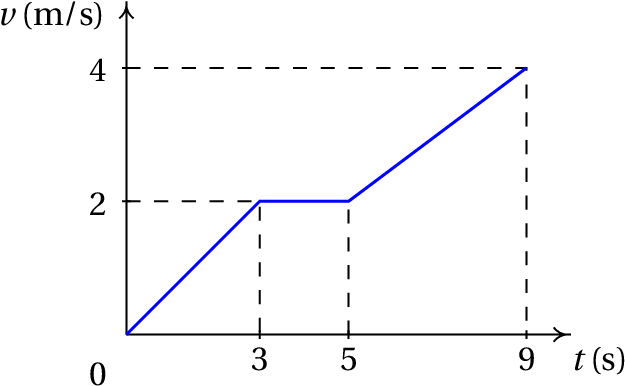

A cinemática é a análise do
movimento sem consideração das suas causas. No caso das corredoras na
fotografia, o movimento dos braços e pernas é oscilante, enquanto que
o movimento da cabeça é mais aproximadamente uniforme e, por isso,
mais fácil de descrever; basta contabilizar o deslocamento horizontal
da cabeça, em função do tempo. Para descrever o movimento das pernas,
para além de considerar o deslocamento horizontal, é necessário
considerar a variação de algum ângulo em função do tempo.
1.1. Movimento dos corpos rígidos
Um objeto encontra-se em movimento se a sua
posição for diferente em diferentes
instantes; se a posição permanece constante, o objeto está
em repouso. Para medir a posição
do objeto, é necessário usar um
referencial; nomeadamente,
outros objetos usados como referencia. Se a posição do corpo em questão
varia em relação ao referencial, o corpo está em movimento em relação a
esse referencial. Assim, o movimento é um conceito relativo, já que um
objeto pode estar em repouso em relação a um dado referencial, mas em
movimento em relação a um outro referencial.
Cada ponto num objeto em movimento ocupa diferentes posições do
espaço, em diferentes instantes de tempo
. O conjunto de posições
do ponto, em todos os instantes
num intervalo
, define
uma curva chamada trajetória do ponto.
A trajetória de qualquer ponto é sempre uma curva contínua; ou seja,
as posições do ponto em
ou
podem estar tão próximas quanto
quisermos, se escolhermos um incremento de tempo
suficientemente pequeno.
O movimento mais simples de um corpo rígido, de translação sem
rotação, é quando todos os pontos do corpo seguem trajetórias
idênticas (ver figura 1.1). Assim sendo,
basta estudar o movimento de um único ponto para conhecer o movimento
do corpo rígido.
Figura 1.1: Movimentos de translação, rotação em torno
de um eixo e sobreposição dos dois.
No movimento de rotação em torno de um eixo, todos os pontos num eixo
permanecem em repouso e os outros pontos deslocam-se. Na segunda parte
na figura 1.1, o martelo rodou em torno de um eixo
perpendicular à página. Nesse tipo de movimento as trajetórias de
pontos diferentes já não são idênticas mas todas elas são arcos de
círculo, com o mesmo ângulo, que só diferem no valor do raio. Basta
saber como varia o ângulo de rotação para descrever o movimento de
qualquer ponto no corpo.
Um movimento mais complicado é a sobreposição de translação e rotação
em torno de um eixo (terceira parte na figura 1.1). Nesse
caso, as trajetórias do diferentes pontos do corpo são curvas
diferentes. No entanto, esse movimento mais complicado pode ser
descrito apenas com a trajetória de um ponto qualquer do corpo e a
variação do ângulo de rotação de uma reta qualquer no corpo; com
efeito, o ângulo de rotação é o mesmo para qualquer segmento no corpo
rígido e após fixar a posição do ponto num instante e o ângulo de
rotação, consegue dizer onde estarão todos os outros pontos do corpo
nesse instante.
Existe também outro tipo de rotação mais geral, rotação à volta de um
ponto, em que um único ponto permanece em repouso. Nesse caso as
trajetórias dos diferentes pontos são curvas na superfície de uma
esfera com centro no ponto em repouso. A forma mais conveniente de
descrever esse tipo de movimento consiste em determinar a variação de
três ângulos. O caso mais geral do movimento de um corpo rígido
consiste na sobreposição de translação e rotação à volta de um
ponto. Nesse caso será necessário conhecer a trajetória de um ponto do
corpo e a variação de três ângulos.
1.2. Movimento e graus de liberdade
Os graus de liberdade de um sistema
são as variáveis necessárias para determinar a sua posição exata. Por
exemplo, para determinar a posição de uma mosca numa sala
"retangular", podem medir-se as suas distâncias até o chão e duas
paredes perpendiculares da sala, dando origem a um sistema de três
coordenadas perpendiculares (coordenadas cartesianas ou retangulares),
que se costumam designar pelas letras
,
e
(figura 1.2).
Figura 1.2: Coordenadas cartesianas de uma mosca numa sala
retangular.
Ou seja, o movimento de um ponto no espaço está associado a 3 graus de
liberdade. A trajetória do ponto é uma curva no espaço, que pode ser
descrita indicando as expressões para as 3 coordenadas cartesianas
,
e
em função do tempo. Como o movimento mais geral de um
corpo rígido é a sobreposição do movimento de um ponto e variação de
três ângulos, esse movimento tem 6 graus de liberdade: 3 coordenadas
que descrevem o movimento do ponto, mais os 3 ângulos que descrevem a
rotação. Outros movimentos mais simples possuem menos graus de
liberdade; a rotação em torno de um eixo fixo tem apenas um grau de
liberdade, a translação sem rotação 3 graus de liberdade e a
translação com rotação em torno de um eixo fixo está associada a 4
graus de liberdade.
Neste capítulo estuda-se apenas o movimento de um ponto. Esse estudo
será suficiente para descrever a translação dos corpos rígidos e
servirá de base para estudar movimentos mais complexos.
Quando um ponto está limitado a seguir uma trajetória pré determinada,
o movimento desse ponto têm um único grau de liberdade. Por exemplo,
no movimento de cada uma das rodas de um carrinho nos carris de uma
montanha russa, enquanto o carrinho siga os carris sem perder o
contacto com eles, o movimento do centro da roda segue uma curva
determinada. Se a posição do ponto num instante inicial é conhecida,
para determinar a posição em qualquer outro instante basta saber o
deslocamento ao longo dos carris, desde o instante inicial até esse
instante.
No movimento de translação de um automóvel numa autoestrada poderá ser
suficiente um único grau de liberdade (figura 1.3). Se o
automóvel sofrer uma avaria e o condutor tiver que telefonar para
pedir um reboque, basta dizer em que quilómetro da autoestrada se
encontra para que o condutor do camião de reboque saiba para onde se
dirigir. Assim, o movimento dos automóveis na autoestrada é
caraterizado por um único grau de liberdade, o deslocamento ao longo
da estrada.
Figura 1.3: A translação de um automóvel numa
autoestrada considera-se um movimento com um grau de liberdade.
De referir que o deslocamento na estrada não é medido em linha reta,
mas ao longo de uma curva no espaço; no entanto, como a forma
detalhada dessa curva já está estabelecida, basta uma variável para
descrever a posição em cada instante. Em outros casos poderá ser
necessário descrever a variação de outros graus de liberdade, por
exemplo, a distância à berma da estrada. Se o automóvel fosse
perfeitamente rígido e sempre em contacto com a estrada, a descrição
completa do movimento seria feita incluindo também um ângulo. Na
prática há sempre muitos mais graus de liberdade porque não existem
corpos perfeitamente rígidos.
Se um ponto está limitado a deslocar-se sobre uma superfície, basta
usar duas coordenadas para determinar a sua posição e o seu movimento
tem dois graus de liberdade.
Um biólogo a seguir o movimento de uma raposa num território terá
apenas de medir a sua longitude e latitude, por exemplo, com um
dispositivo de GPS, para indicar o ponto onde se encontra em cada
instante. Não são necessárias 3 variáveis, mas apenas duas, se o mapa
topográfico da região for conhecido, permitindo localizar um ponto
apenas com a sua longitude e latitude; uma terceira variável, a
altura, tem um valor pré determinado de acordo com a topografia do
terreno, como no exemplo da figura 1.4. Realmente há um
terceiro grau de liberdade, a altura sobre a superfície do terreno,
mas como essa altura terá variações insignificantes comparada com as
variações da latitude e longitude, poderá não ter relevância.
Figura 1.4: A translação na superfície de um terreno
é um movimento com dois graus de liberdade.
Consequentemente, o movimento da raposa é um movimento com dois graus
de liberdade, porque bastam duas coordenadas para determinar a
posição. A latitude e a longitude na superfície do terreno não são
realmente distâncias mas sim ângulos com vértice no centro da Terra,
mas continuam a ser dois graus de liberdade que podem ter diferentes
valores em diferentes instantes.
Regressando ao exemplo inicial do voo da mosca, que foi considerada
como um único ponto em movimento com 3 coordenadas
,
e
, a
mosca também pode mudar a sua orientação. Para definir a orientação da
reta segundo o corpo da mosca podem usar-se 2 ângulos e é necessário
um terceiro ângulo para indicar a rotação da mosca em relação a essa
reta; ao todo são 6 graus de liberdade. Mas a mosca pode também
esticar ou dobrar o corpo e abrir ou fechar as asas, por exemplo, pelo
que, do ponto de vista físico, tem muitos mais graus de liberdade. Se
a mosca for modelada com 3 corpos rígidos: as duas asas e o bloco
constituído por cabeça, tórax e abdómen, para descrever o movimento do
primeiro corpo rígido — cabeça, tórax e abdómen — são precisos os
seis graus de liberdade já descritos. Cada asa acrescenta outros 3
graus de liberdade — os ângulos da rotação à volta de um ponto fixo
onde a asa está ligada ao tórax — tendo no total 12 graus de
liberdade.
1.3. Deslocamento e velocidade
Neste capítulo considera-se apenas o movimento com um grau de
liberdade, no qual a trajetória é uma curva conhecida. Para determinar
a posição na trajetória,
, escolhe-se como origem um ponto qualquer
da trajetória (ponto onde
) e arbitra-se sinal positivo para os
pontos a um dos lados da origem e negativo para os pontos no outro
lado. A posição num ponto da trajetória é o comprimento de arco
da
trajetória, desde o ponto até à origem, com sinal positivo ou negativo
segundo o lado onde estiver o ponto.
A posição é uma função do tempo
, porque em cada instante o
objeto só pode estar num ponto e é uma função contínua: se num
instante
o objeto encontra-se na posição
, e num instante
posterior,
, a posição é
, então o
objeto deverá ter passado por todas as posições
no intervalo
, em intantes
no intervalo
.
Define-se o deslocamento ao longo da
trajetória,
, no intervalo
, igual
a:
(1.1)
E a velocidade média,
, nesse intervalo de tempo, é, por definição, igual ao
deslocamento por unidade de tempo:
(1.2)
O deslocamento e a velocidade média podem ser positivos ou negativos.
Se o deslocamento e a velocidade são positivos, quer dizer que o
movimento é no sentido positivo em que se mede
; caso contrário, o
movimento é no sentido negativo. O valor absoluto da velocidade,
é a rapidez com que se desloca o
objeto. As unidades da velocidade são distância sobre tempo: por
exemplo, metros por segundo, m/s, ou quilómetros por hora,
km/h. Também é aceite (mas não obrigatório) escrever m·s-1 ou
km·h-1, usando um ponto para indicar o produto entre
unidades.
Exemplo 1.1
Um passageiro num autocarro que se desloca numa autoestrada toma nota
da hora de passagem por alguns dos sinais de demarcação quilométrica
da via, obtendo os valores na seguinte tabela:
hora
14:15
14:50
15:30
15:45
16:15
km
0
60
90
100
140
Calcule a velocidade média em cada intervalo e represente os gráficos
da posição na trajetória e da velocidade média.
Resolução. Passando os tempos da tabela de horas:minuto para
horas, a sequência dos 5 tempos é:
Essa sequência pode ser introduzida no programa
Maxima como uma lista (consulte o apêndice A):
Como é referido no apêndice, optou-se por mostrar os números de
vírgula flutuante arredondados a 4 algarismos significativos, embora
internamente possam ter até 16 algarismos.
A sequência de posições ao longo da trajetória, em km, é:
que pode ser inserida numa lista e associada à variável s no Maxima:
(%i2) s: [0, 60, 90, 100, 140]$
Há quatro intervalos entre os 5 instantes de tempo registados. As
velocidades médias nesses 4 intervalos calculam-se aplicando a
equação 1.2, com
a variar entre 1 e 4. Isso pode se feito
usando a função makelist do Maxima:
O resultado mostra-se na figura 1.5. Usou-se a opção "y"
de plot2d, para que o contradomínio não fica-se, por omissão,
entre 0 e 140, colocando assim o primeiro e último ponto por cima dos
eixos. A opção [style, linespoints] faz com que sejam
colocados pontos na lista de pontos dados e esses pontos sejam também
interligados por segmentos de reta.
Figura 1.5: Gráfico da posição na trajetória em alguns instantes.
Como
é uma função contínua, o seu gráfico deve ser uma curva
que passa pelos pontos apresentados na figura 1.5, mas com a
informação disponível não é possível determinar a forma exata dessa
curva; usaram-se segmentos de reta para dar uma ideia aproximada de
como deveria ser a função. As quatro velocidades médias, obtidas com a
equação 1.2, são os declives dos quatro segmentos de reta no
gráfico 1.5.
Para traçar o gráfico da velocidade média em função do tempo, há que
ter em conta que cada uma das 4 velocidades médias foi calculada num
intervalo de tempo e, por isso, o seu valor deve ser atribuído a todos
os pontos no respetivo intervalo. O gráfico será então como uma escada
com 4 degraus horizontais a diferentes alturas. Para traçar o gráfico
precisamos de 8 pontos: (
,
), (
,
), (
,
), (
,
), (
,
), (
,
), (
,
)
e (
,
), já que os 3 instantes intermédios
,
e
cada um faz parte de dois intervalos.
Usando a função ceiling do Maxima, que arredonda um número real
para o menor inteiro superior ao número, a lista desses oito pontos
pode obter-se como o comando seguinte:
A função plot2d, que já foi usada dando a lista de coordenadas das abcissas seguida da lista das ordenadas, também aceita uma lista de pares [abcissa, ordenada] como a lista p criada no comando anterior. Como tal, o gráfico da velocidade média é obtido assim:
Figura 1.6: Gráfico da velocidade média em 4 intervalos de tempo.
Um gráfico da velocidade média
, como o do exemplo anterior
(figura 1.6), apresenta vários problemas. Primeiro, há
descontinuidades na fronteira entre os intervalos de tempo, que foram
representadas por segmentos verticais; por exemplo, em
,
terá algum valor indeterminado entre
km/h e
km/h.
Outro problema é que o gráfico de
vs
não dá informação
precisa sobre o verdadeiro movimento do autocarro. Por exemplo, no
segundo intervalo, entre as 14:50 e as 15:30, o gráfico 1.6
sugere que o autocarro andou com velocidade constante 45 km/h, durante
40 minutos, percorrendo assim
km. Mas a mesma
distância teria sido percorrida se o autocarro tivesse mantido
velocidade constante de 90 km/h, durante 30 minutos, seguido de uma
paragem de 10 minutos. Qual das duas situações será o que realmente
aconteceu? Com certeza que nenhuma das duas, já que a velocidade não
pode mudar bruscamente, como no gráfico, nem de 90 km/h para 0. O mais
certo é que a velocidade tenha tido muitas variações durante o
intervalo.
Para descrever melhor o movimento, seria necessário ter os valores de
posição em mais intervalos de tempo. No exemplo 1.1, se o
passageiro tivesse registado as indicações quilométricas cada cinco
minutos, o gráfico da posição poderia ser o que aparece no lado
esquerdo da figura 1.7 (os pontos escuros são os que já
apareciam na tabela do exemplo 1.1). Com essa informação
adicional, o gráfico das velocidades médias é o que aparece no lado
direito da figura 1.7; a velocidade média em cada um dos 24
intervalos de 5 minutos é o declive de um dos segmentos de reta no
gráfico do lado esquerdo. Quanto menor for o intervalo de tempo entre
medições sucessivas, mais próximos estariam esses gráficos das
verdadeiras funções da posição e a velocidade.
Figura 1.7: Gráficos da posição
na trajetória a cada 5 minutos e respectivas
velocidades médias.
Derivadas
Na equação 1.2, se o instante inicial
for um tempo
qualquer e
for o instante
depois de
,
será então o valor da função
no instante
e
o valor dessa função em
, ou seja,
. A equação 1.2 conduz à velocidade média
nesse intervalo,
(1.3)
Se o intervalo de tempo
for muito pequeno, aproximando-se
de zero, a velocidade média
aproximar-se-á da velocidade
exata que o objeto tem no instante
. Como tal, define-se a
velocidade instantânea, em
função do tempo
, igual ao limite:
(1.4)
Este limite chama-se derivada. A equação
anterior diz então que a velocidade instantânea é uma função igual à
derivada da função posição,
. Em vez de escrever o limite,
usaremos alguma das duas seguintes notações frequentemente usadas para
a derivada:
(1.5)
O ponto por cima da função indica a sua derivada em ordem ao tempo. A
partir de agora, quando se fale de velocidade estará implícito que se
está a falar da velocidade instantânea, num instante qualquer
.
Num automóvel, o velocímetro mede a velocidade instantânea,
provavelmente com alguma margem de erro de medição e atraso no tempo.
No gráfico de
no lado esquerdo da figura 1.7, cada ponto
liga dois segmentos de reta que podem ter declives diferentes; no
limite
, esses dois segmentos passam a ser um
só, tangente à curva
, com declive igual à derivada
nesse ponto. Como tal, no gráfico da posição em função do tempo, a
velocidade instantânea em cada ponto é igual ao declive da reta
tangente à função nesse ponto.
Primitivas e integrais
Se a posição em função do tempo é uma expressão
conhecida, a
sua derivada em ordem ao tempo dá a expressão
, para a
velocidade em função do tempo. Considere-se o problema inverso:
conhece-se a expressão
, da velocidade em função do tempo, e a
posição inicial
do objeto, num instante inicial
, e
pretende-se determinar a expressão
, ou seja, o valor da posição
num instante final
qualquer.
Designando por
a velocidade média no intervalo desde
até
e substituindo na equação 1.2
e
, obtém-se o seguinte resultado
(1.6)
O problema com a equação anterior é a dificuldade em determinar a
velocidade média
, no intervalo desde
até
, a
partir da expressão
. Se o intervalo de tempo,
, fosse
muito pequeno, a velocidade média seria aproximadamente igual à
velocidade instantânea
. A solução será então dividir o
intervalo
em
subintervalos, que poderão ser todos do mesmo
valor
. Seja agora
a velocidade média
no subintervalo desde
até
; o
deslocamento nesse subintervalo será
. Como tal, a expressão para a
posição final é:
(1.7)
No limite quando
se aproxima de infinito, a velocidade média
aproxima-se da velocidade instantânea
e o
intervalo
, que é infinitesimal (aproxima-se de zero),
denota-se
. Como tal, a soma é uma soma infinita de
termos infinitesimais, mas o resultado é um valor finito. A
notação habitual para esse tipo de somas é usar o símbolo de
integração,
, indicando os valores inicial e final do intervalo
nos dois extremos:
(1.8)
O termo,
(1.9)
é uma função de
chamada primitiva da
função
. Usou-se a variável
no integrando,
, para evitar confundi-la com o limite superior
no símbolo de integração. A variável
, na primitiva
é
apenas o limite superior no símbolo de integração. A variável
considera-se uma "variável muda", porque pode ser substituída por
qualquer outro nome (
,
, etc.) sem alterar o resultado. Dentro
do integral,
é simplesmente um instante que se encontra entre
e
, e
é um intervalo infinitesimal a partir
de
, ao qual corresponderá um deslocamento infinitesimal
, igual ao valor de
em
, vezes o intervalo
infinitesimal
:
(1.10)
e a primitiva é a soma de todos esses deslocamentos infinitesimais,
para todos os instantes
entre
e
.
Existe um número infinito de primitivas da função
,
correspondentes a todos os possíveis valores de
, no entanto,
como a primitiva
é igual a
, a diferença entre duas
primitivas quaisquer é uma constante. Isto é, os gráficos das
primitivas têm a mesma forma geométrica, mas estão deslocados no eixo
das ordenadas.
Como
é uma constante, a derivada de
em ordem ao tempo
é igual à derivada de
, que é a velocidade
. Como tal, a
derivada de qualquer primitiva de
é igual a
. Encontrar
uma primitiva de uma função qualquer
, consiste em encontrar
outra função com derivada igual a
. A primitiva costuma também
chamar-se antiderivada.
Quando
não estiver a ser usado nos limites do símbolo de
integração, usaremos
como variável muda no integrando. Por
exemplo, se usarmos a equação 1.8 para determinar o valor da
posição final
, no instante final
, o resultado será:
(1.11)
O termo,
(1.12)
chama-se integral da função
, entre
e
. O resultado será um valor numérico, e não uma expressão
com a variável
.
Teorema fundamental do cálculo
Consideremos duas posições
e
, em dois instantes
e
(é indiferente qual dos dois tempos é menor). A partir das
equações 1.8 e 1.9, conclui-se que,
(1.13)
Mas
pode obter-se também substituindo
por
e
por
na equação 1.11:
(1.14)
Comparando estes dois últimos resultados, obtém-se o teorema
fundamental do cálculo:
(1.15)
Nomeadamente, um integral pode ser calculado encontrando uma primitiva
qualquer da função no integrando e o resultado será o valor dessa
primitiva no limite superior, menos o valor da mesma primitiva no
limite inferior.
Teorema do valor médio
A equação 1.11 também mostra que o integral da velocidade
, em ordem ao tempo, entre
e
é igual ao deslocamento
do objeto, ao longo da trajetória,
, desde o
instante inicial
, até o instante final
.
Voltando ao exemplo 1.1 do movimento do autocarro, o
deslocamento total, nas duas horas que demorou o percurso, foi
km. Como tal, a velocidade média da viagem foi
km/h, que é a velocidade que deveria
ter tido o autocarro, para deslocar-se
km durante o
intervalo
h. A figura 1.8 mostra a
interpretação geométrica do deslocamento
, igual à área sob
o gráfico da velocidade média (área sombrejada na figura). Neste caso,
a dita área é a área de um retângulo com base
h e altura
km/h.
Figura 1.8: Gráfico da velocidade média no intervalo de 2 horas.
Se o intervalo
h for dividido em 24 intervalos de 5
minutos, tal como foi feito para produzir a figura 1.7
acima, a velocidade média será mais parecida com a velocidade
instantânea. A área sombrejada, sob o gráfico da velocidade nessa
figura é o somatório na equação 1.7,
(1.16)
com
e
minutos, que é exatamente igual a 140 km.
No limite dum número infinito de subintervalos, o gráfico da
velocidade média aproxima-se do gráfico da velocidade instantânea e o
somatório é o integral da velocidade instantânea. Conclui-se então que
o integral da velocidade instantânea, entre
e
(deslocamento ao longo da trajetória) é igual à área sob o gráfico de
, entre
e
.
Como o deslocamento
é igual à velocidade média vezes o
intervalo de tempo,
, e também é igual ao integral da
velocidade instantânea nesse intervalo (equação 1.11), a
velocidade média pode ser calculada a partir da expressão
da
velocidade, da forma seguinte (teorema do valor médio):
(1.17)
1.4. Aceleração
Seguindo o mesmo raciocínio usado no caso da posição
, o aumento
da velocidade num intervalo de tempo entre
e
é igual a:
(1.18)
Define-se a
aceleração tangencial média,
nesse intervalo, igual ao aumento da velocidade por unidade de tempo:
(1.19)
A aceleração tangencial
instantânea, no instante
, obtém-se no limite
(1.20)
Como tal, a aceleração tangencial
é uma função do
tempo, igual à derivada da velocidade em ordem ao tempo, e,
consequentemente, igual à segunda derivada da posição em ordem ao
tempo.
(1.21)
Essas derivadas deverão existir, para qualquer valor de
, já que
e
são ambas contínuas. A aceleração tem unidades de
distância sobre tempo ao quadrado. Por exemplo, metros por segundo ao
quadrado, m/s2 ou m·s-2.
Se a aceleração tangencial de um objeto é negativa, a sua velocidade
está a diminuir: pode estar a abrandar se a velocidade é no sentido
positivo ou pode estar a andar cada vez mais rápido, se a velocidade é
no sentido negativo. Aceleração tangencial positiva indica que o
objeto está a andar cada vez mais rápido, se a velocidade é positiva,
ou mais devagar se a velocidade é negativa. Aceleração tangencial nula
implica velocidade constante.
O uso do termo "aceleração tangencial", e não apenas aceleração, é
porque como será explicado no capítulo 3, a
aceleração tem outra componente, perpendicular à trajetória, que não
está relacionada com a variação da velocidade mas sim com a curvatura
da trajetória. A velocidade não tem componente perpendicular à
trajetória e, por isso, não é necessário o índice t, porque
é
sempre tangencial.
Tal como a posição e a velocidade, a aceleração tangencial também é
uma função do tempo. No entanto, não tem de ser uma função contínua.
A posição e a velocidade são propriedades que definem o estado de um
objeto e esse estado não pode mudar bruscamente, enquanto que a
aceleração está associada a fatores externos que podem aparecer ou
desaparecer em qualquer instante. Como tal, não costuma definir-se
nenhuma outra grandeza física associada à derivada da aceleração.
Se a expressão da aceleração tangencial em função do tempo,
, for conhecida, é possível determinar a expressão da
velocidade em função do tempo; o procedimento é o mesmo que foi usado
para obter a equação 1.8, e neste caso o resultado é:
(1.22)
A figura 1.9 mostra a relação entre os gráficos da posição,
a velocidade e a aceleração tangencial no mesmo intervalo de tempo,
que inclui dois instantes
e
. No gráfico da posição,
, o declive da reta tangente em
é igual à velocidade
, que é negativa, e o declive da reta tangente em
é igual à
velocidade
, que é positiva.
Figura 1.9: Relação entre a posição, a velocidade e a aceleração tangencial.
No gráfico da velocidade,
, o declive da reta tangente em
é igual à aceleração tangencial
, que é negativa, e o
declive da reta tangente em
é igual à aceleração tangencial em
, que é positiva. A área entre a curva e o eixo das
abcissas, desde
até
, é formada por duas partes,
e
;
corresponde a um deslocamento
negativo, porque a velocidade é negativa nesse intervalo, e
é um deslocamento positivo, porque a velocidade é
positiva nesse intervalo. O deslocamento total desde
até
é
a soma desses dois deslocamentos. Como tal, a partir do gráfico de
conclui-se que
.
No gráfico da aceleração tangencial,
, a área entre a
curva e o eixo das abcissas, desde
até
, é formada por duas
partes,
e
;
corresponde a uma diminuição da
velocidade
, porque a aceleração tangencial é
negativa nesse intervalo, e
é um aumento da
velocidade, porque a aceleração tangencial é positiva nesse
intervalo. O aumento total da velocidade, desde
até
é a
soma desses dois aumentos. Como tal, a partir do gráfico de
conclui-se que
.
Exemplo 1.2
Liga-se o motor de um barco no instante
, em que o barco está
parado. Após 5 minutos desliga-se o motor, deixando que o barco
abrande, pela resistência da água, até parar novamente. Em unidades
SI, a expressão da velocidade em função do tempo
é:
Encontre as expressões da aceleração tangencial e da posição na
trajetória, em função do tempo. Represente os gráficos da velocidade,
aceleração e posição em função do tempo. Calcule as distâncias
percorridas enquanto o motor esteve ligado e enquanto esteve desligado
até o barco parar.
Resolução. A função dada para a velocidade é contínua, a
pesar de ser definida por duas expressões diferentes. A aceleração
tangencial calcula-se derivando a expressão da velocidade. No Maxima,
podemos associar as duas expressões da velocidade a duas variáveis
diferentes
Observe-se que a aceleração tangencial neste caso é descontínua. Em
, a expressão a1 aproxima-se de
, que é um valor positivo, enquanto
a2 aproxima-se de
, que é
negativo. A descontinuidade da aceleração em
s é devida a que
o motor foi desligado subitamente nesse instante.
Para obter a expressão da posição em qualquer instante
, usa-se a
equação 1.8, com
e arbitrando
. Se
for
menor ou igual a 300, a expressão para a velocidade é a primeira
expressão dada:
Se
for maior que 300, pode substituir-se
e
(já calculado) na equação 1.8 (a posição
inicial
já não pode ser arbitrada porque deve ser
consistente com a expressão
). Como tal, os limites do
integral serão entre 300 e
, ambos maiores ou iguais a 300 e, assim
sendo, usa-se a segunda expressão da velocidade no integrando:
No Maxima, esses dois integrais calculam-se assim:
Os gráficos fornecem muita informação útil, menos evidente nas
expressões algébricas. O gráfico da velocidade mostra que o barco atinge
rapidamente, no primeiro minuto, uma velocidade máxima de 12 m/s e
permanece com velocidade quase constante até o instante em que é
desligado o motor; a partir desse instante, a velocidade diminui
rapidamente e em
s (6 minutos) já é praticamente nula. A
expressão exponencial da velocidade implica que, em teoria, nunca chega a
ser completamente nula.
Na prática, a expressão dada no enunciado para a velocidade não pode
ser válida quando o valor obtido for muito pequeno; por exemplo, em
s a velocidade obtida com essa expressão é
(%i14)float (subst (t=400, v2));
(%o14) 0.02975
quase 3 centímetros por segundo. Existem outros fenómenos como
correntes na água ventos e ondas na superfície da água, que produzem
variações da velocidade maiores do que esse valor. A expressão dada
para a velocidade é o resultado de um modelo matemático, que só pode
ser válido quando os valores obtidos ultrapassem os efeitos de outras
flutuações que não são tidas em conta no modelo.
No gráfico da aceleração, a descontinuidade em
s aparece como
uma risca contínua, devido a que o comando plot2d do Maxima não
deteta a descontinuidade nesse ponto, mas considera as duas partes do
gráfico como uma única função contínua. O gráfico da posição mostra um
aumento linear em quase todo o intervalo dos primeiros 5 minutos e a
paragem rápida após esses primeiros minutos. A distância percorrida
enquanto o motor esteve ligado é o deslocamento desde
até
; como arbitrou-se
, essa distância é,
Em teoria, o barco demora um tempo infinito até parar; na prática,
demora apenas um pouco mais de 6 minutos, como vimos. Como tal, a
distância percorrida enquanto o motor esteve desligado é
. O valor
é o limite de
quando
é infinito. No Maxima, o limite calcula-se assim:
(%i15)limit (s2, t, inf);
(%o15) 3600
Quando o motor é desligado, o barco percorre 200 m até parar.
1.5. Movimentos uniforme e uniformemente acelerado
Chama-se movimento uniforme ao movimento com
velocidade constante
. O gráfico de
vs
então será como o
da figura 1.8. A derivada de
, igual ao declive da
tangente, é então nula. O integral de
, entre
e
, igual
à área sob o gráfico da função, é então a área do retângulo de base
e altura
. Como tal, as expressões da posição e da
aceleração tangencial em função do tempo são (equações 1.8 e
1.21):
(1.23)
O movimento uniformemente
acelerado é o movimento com
aceleração tangencial
constante. A área sob o gráfico
da aceleração tangencial, entre
e
, é então um retângulo de
base
e altura
. A equação 1.22 conduz à
expressão para a velocidade em função do tempo:
(1.24)
A figura 1.13 representa o gráfico de
. O deslocamento
entre
e
é a área sombrejada na figura, que é a área do
trapézio com base
e alturas
e
:
(1.25)
Figura 1.13: Gráfico da velocidade no movimento uniformemente acelerado.
e, substituindo a expressão 1.24 de
, obtém-se a
expressão da posição em função do tempo:
(1.26)
Entre as equações 1.24 e 1.26 pode eliminar-se o
tempo
, obtendo-se assim a expressão da velocidade em função da
posição:
(1.27)
Há que ter em conta que as equações 1.24, 1.26 e
1.27 são apenas válidas no caso em que a aceleração
tangencial é constante. Quando esse não for o caso, para obter a
expressão da velocidade a partir da equação 1.22, é
necessário integrar a expressão de
em ordem
. E para
obter a expressão da posição a partir da equação 1.8, é
necessário integrar a expressão de
em ordem a
. Se essas
expressões não são conhecidas, em alguns casos pode usar-se o método
explicado na seguinte secção.
1.6. Equações cinemáticas
As equações diferenciais
1.5 e 1.21 definem a relação entre as variáveis
cinemáticas (
,
,
) e o tempo
. Se for conhecida a
expressão para uma das variáveis cinemáticas em função do tempo, as
expressões para as outras duas variáveis podem ser obtidas por simples
derivação ou integração, tal como no exemplo 1.2.
Nos casos em que é conhecida uma expressão para a velocidade em função
da distância percorrida
, a derivada da velocidade em ordem ao
tempo deve ser calculada usando a regra da cadeia para funções
compostas:
(1.28)
Esta é outra equação cinemática. Resumindo, as quatro equações que
relacionam três das quatro variáveis cinemáticas
,
,
e
são (note-se que as equações com pontos incluem a
variável
):
(1.29)
Qualquer uma dessas equações pode ser resolvida quando existe uma
relação conhecida entre algumas das três variáveis na equação. Por
exemplo, considere-se a primeira equação,
; se for
conhecida uma expressão para a posição em relação ao tempo, ou seja,
, a equação fica
(1.30)
que implica que a expressão para
em relação a
é a derivada
da função dada. Note-se que quando a função
depende
de outras variáveis, a derivada em ordem ao tempo encontra-se usando a
regra da cadeia. Por exemplo, se
, obtém-se:
(1.31)
que dá a expressão para a aceleração em relação à velocidade. E no
caso em que
, a expressão da velocidade
será:
(1.32)
Nos casos em que é conhecida uma expressão para
em função de
,
ou seja,
, tal como no exemplo 1.2, a
equação
conduz a
Em casos mais complicados, por exemplo se a relação conhecida é da
forma
, obtém-se uma equação
diferencial ordinária, isto é, uma
equação com duas variáveis e a derivada de uma delas em relação à
outra. Pode fazer-se uma análise semelhante para as outras 3 equações.
Algumas equações diferenciais podem ser resolvidas analiticamente,
usando vários métodos conhecidos, como mostra o exemplo seguinte, mas
em outros casos a solução deve ser obtida de forma numérica, que será
o tema do capítulo 7.
Exemplo 1.3
Num tiro com arco (ver figura), enquanto a flecha está em contacto com
a corda, a sua aceleração diminui linearmente em função da sua posição
, desde um valor máximo inicial de 4500 m/s2, na posição A,
até zero, na posição B que se encontra a 600 mm de A. Calcule a
velocidade com que sai disparada a flecha em B.
Resolução: Usando o ponto A como origem para a posição
da
seta e em unidades SI, a expressão da aceleração tangencial no
intervalo
m é a equação da reta que passa pelos
pontos (
,
) = (0, 4500) e (
,
) =
(0.6, 0), ou seja,
que pode ser substituída na equação
conduzindo a uma equação diferencial ordinária
Este tipo de equação em particular chama-se de
variáveis separáveis, porque as duas variáveis podem ser
separadas nos dois lados da equação da forma seguinte
Escolhendo
no instante em que a seta parte do ponto A, então a
condição inicial necessária para resolver esta equação é que
quando
. Integração nos dois lados da equação, desde esses
valores iniciais até os valores no ponto B, conduz a
Note-se que os limites nos dois integrais devem ser consistentes; ou
seja, cada limite no integral em ordem a
é o valor de
num
ponto e o limite correspondente no integral em ordem a
no outro
lado da equação é o valor de
nesse mesmo ponto. A resolução dos
dois integrais conduz ao valor de
no ponto B
Perguntas
(Para conferir a sua resposta, clique nela.)
A aceleração tangencial de um objeto é
(unidades SI). Se no instante inicial
= 0 a velocidade for igual a
4 m/s, qual será a velocidade 3 segundos mais tarde?
22 m/s
18 m/s
40 m/s
36 m/s
4 m/s
Em qual dos seguintes casos é possível afirmar, sem lugar a
dúvida, que a rapidez do objeto está a diminuir?
m/s,
m/s2
m/s,
m/s2
,
m/s2
m/s,
m/s,
5 m/s2
A expressão da velocidade de uma partícula é
. Qual
é a expressão correta para a aceleração tangencial
?
O gráfico mostra a velocidade de um corpo, em função do tempo.
Determine a distância percorrida ao longo da trajetória, entre
e
s.

1 m
12 m
7 m
5 m
19 m
Num gráfico da velocidade em função da posição na trajetória, o
declive em cada ponto representa:
A aceleração tangencial.
A velocidade.
A aceleração tangencial dividida pela velocidade.
A velocidade vezes a aceleração tangencial.
A velocidade dividida pela aceleração tangencial.
Problemas
Neste capítulo nove equações foram sublinhadas
dentro de uma caixa, mas basta lembrar as equações 1.29,
porque todas as outras estão contidas nelas.
(a) Admitindo que a expressão da velocidade em função do
tempo,
, é conhecida, obtenha a equação 1.8, a partir
das equações 1.29, usando o método de separação de
variáveis.
(b) Na alínea anterior, no caso particular em que
é uma
função constante, obtenha a equação 1.23.
(c) Admitindo que a expressão da aceleração tangencial em
função do tempo,
, é conhecida, obtenha a
equação 1.22 a partir das equações 1.29.
(d) Na alínea anterior, no caso particular em que
é uma função constante, obtenha as
equações 1.24 e 1.26.
(e) Admitindo que a expressão da aceleração tangencial em
função da posição,
, é conhecida, obtenha uma
expressão para
a partir das equações 1.29.
(f) Na alínea anterior, no caso particular em que
é uma função constante, obtenha a
equação 1.27.
A posição de um objeto na sua trajetória é dada
pela expressão
(unidades SI). Determine o
tempo, posição e aceleração tangencial nos instantes em que a
velocidade do objeto é nula (
).
A expressão da aceleração tangencial de um
objeto é
m/s2. Se em
,
m/s e a
posição na trajetória é
, determine a velocidade e a posição em
s e a distância total percorrida, ao longo da trajetória,
entre
e
s.
Em
, um objeto encontra-se em repouso na
posição
cm num percurso. A partir desse instante o objeto
começa a deslocar-se no sentido positivo de
, parando novamente
num instante
. A expressão da aceleração tangencial, entre
e
, é:
, onde o tempo mede-se em
segundos e a aceleração em cm/s2. Determine: (a) O
instante
em que o objeto volta a parar. (b) A posição
no percurso nesse instante.
Os gráficos da figura 1.9 foram
obtidos usando a expressão
(admita unidades SI),
no intervalo
. (a) Encontre a expressão
. (b) Sabendo que em
a posição é
encontre a expressão
. (c) Reproduza os 3 gráficos da
figura 1.9. (d) Determine os valores de
,
,
,
,
e
, para
e
. (e) Corrobore que
é igual ao
integral de
, entre
e
. (f) Corrobore que
é igual ao integral de
, entre
e
. (g) Determine os valores das áreas
e
nos
gráficos da velocidade e da aceleração tangencial.
A aceleração tangencial de uma partícula é dada
pela expressão
, onde
é uma constante
positiva. A partícula parte do repouso em
mm, e em
mm a sua velocidade é
m/s. Determine: (a) O
valor de
. (b) A velocidade da partícula em
mm.
A expressão da aceleração tangencial de um
objeto que oscila numa calha é
, onde
é uma
constante positiva. Determine:
(a) O valor de
para que a velocidade seja
m/s em
e
em
m.
(b) A velocidade do objeto em
m.
A aceleração tangencial de um objeto é
(unidades SI), onde
é a
posição ao longo da trajetória e
uma constante. Sabendo que o
objeto passa pela origem
com velocidade
m/s, determine
a velocidade em
m, para os seguintes valores da constante
:
(a)
, (b)
, (c)
.
O quadrado da velocidade
de um objeto
diminui linearmente em função da posição na sua trajetória,
, tal
como se mostra no gráfico. Calcule a distância percorrida durante os
dois últimos segundos antes do objeto chegar ao ponto B.
A aceleração tangencial de um objeto é
, onde
é medida em mm/s2 e
em mm/s. Sabendo que em
a velocidade é 30 mm/s, determine:
(a) A distância que o objeto percorre desde
até parar.
(b) O tempo necessário para o objeto parar.
(c) O tempo necessário para que a velocidade diminua ate 1
por cento do seu valor inicial.
A posição de uma partícula na sua trajetória
é aproximada pela relação
(unidades SI).
(a) Encontre as expressões para a velocidade e a aceleração
em função do tempo.
(b) Determine os valores do tempo, a posição e a aceleração
nos instantes em que a partícula está em repouso (
).
(c) Trace os gráficos da posição, da velocidade e da
aceleração, em
.
Respostas
Perguntas:1. A. 2. B. 3.
A. 4. B. 5. C.
Problemas
(e)
,
m,
m/s2 e
s,
m,
m/s2.
Velocidade
m/s, posição
m e distância percorrida 80 m.
(a) 3 s (b) 25.25 cm.
(a)
(b)
(d)
,
,
,
,
,
(g) No gráfico de
:
,
.
No gráfico de
:
,
(a) 24 m3/s2
(b) −11.49 m/s.
(a) 25 s−2
(b) ±11.18 m/s (o objeto oscila).
(a) ±15 m/s, porque o objeto oscila
(b) ±14.74 m/s, porque o objeto oscila.
(c) 15.25 m/s, unicamente positiva porque o
objeto desloca-se sempre no sentido positivo. (Para saber
se o objeto oscila ou não, pode obter-se a expressão de
em função de
e observar-se o seu gráfico).
65.33 m
(a) 75 mm (b) infinito (c) 11.51 s.
,
Em
s,
m,
m/s2. Em
s,
m,
m/s2
Os gráficos são os seguintes
Pergunta 1, resposta A: Certa
O aumento da velocidade durante os 3 segundos é o integral
de
, em ordem ao tempo, que é somado à velocidade
inicial.
(clique para continuar)
Pergunta 1, resposta B: Errada
18 m/s é apenas o aumento da velocidade durante os 3
segundos. Falta somar a velocidade inicial que o objeto já
tinha.
(clique para continuar)
Pergunta 1, resposta C: Errada
O aumento da velocidade durante os 3 segundos é o integral
de
em ordem ao tempo, que deve ser somado à
velocidade inicial.
(clique para continuar)
Pergunta 1, resposta D: Errada
O aumento da velocidade durante os 3 segundos não é igual
vezes
, mas sim o integral de
em ordem ao tempo, desde
= 0 até
=
3.
(clique para continuar)
Pergunta 1, resposta E: Errada
A velocidade não pode permanecer igual, porque há
aceleração tangencial, sempre positiva, que implica aumento
da velocidade.
(clique para continuar)
Pergunta 2, resposta A: Errada
Aceleração tangencial
positiva implica
aumento da velocidade
e como
é positiva, então está
a aumentar em valor absoluto: o objeto está a andar mais
depressa.
(clique para continuar)
Pergunta 2, resposta B: Certa
Aceleração tangencial
positiva implica
aumento da velocidade
e como
é negativa, então está
a diminuir em valor absoluto: o objeto está a abrandar.
(clique para continuar)
Pergunta 2, resposta C: Errada
O valor positivo de
implica que
está a
aumentar e como
é nula, o seu valor absoluto vai aumentar.
(clique para continuar)
Pergunta 2, resposta D: Errada
O valor nulo de
implica que a velocidade permanece
constante.
(clique para continuar)
Pergunta 2, resposta E: Errada
O negativo de
implica que
está a diminuir
e como
é negativa, o seu valor absoluto vai aumentar.
(clique para continuar)
Pergunta 3, resposta A: Certa
A derivada de
em ordem a
obtém-se multiplicando a
sua derivada em ordem a
, vezes a derivada de
em ordem a
, que é a própria velocidade
.
(clique para continuar)
Pergunta 3, resposta B: Errada
A aceleração tangencial
é a derivada de
em ordem a
,
que não é igual à sua derivada em ordem a
.
(clique para continuar)
Pergunta 3, resposta C: Errada
A aceleração tangencial
não pode ser calculada dividindo
por
. A equação
é
válida unicamente quando a aceleração tangencial é constante, que não é
certo neste caso.
(clique para continuar)
Pergunta 3, resposta D: Errada
Se obteve este resultado dividindo
por
, essa não
é a forma correta de calcular a aceleração tangencial. Se obteve este
resultado derivando
em ordem a
, enganou-se na
derivação.
(clique para continuar)
Pergunta 3, resposta E: Errada
Se obteve este resultado pela equação
,
essa equação é válida unicamente quando a aceleração tangencial
é constante (falso neste caso) e a velocidade
igual a
zero em
(isso sim é verdadeiro neste caso).
(clique para continuar)
Pergunta 4, resposta A: Errada
A distância percorrida é o integral de
, desde
até
, que no gráfico corresponde à área do triângulo
desde
até
, mais a área do quadrado desde
até
,
mas área do trapézio desde
até
.
(clique para continuar)
Pergunta 4, resposta B: Certa
A distância percorrida é o integral de
, desde
até
, que no gráfico corresponde à área do triângulo
desde
até
, mais a área do quadrado desde
até
,
mas área do trapézio desde
até
.
(clique para continuar)
Pergunta 4, resposta C: Errada
A distância percorrida é o integral de
, desde
até
, que no gráfico corresponde à área do triângulo
desde
até
, mais a área do quadrado desde
até
,
mas área do trapézio desde
até
.
(clique para continuar)
Pergunta 4, resposta D: Errada
A distância percorrida é o integral de
, desde
até
, que no gráfico corresponde à área do triângulo
desde
até
, mais a área do quadrado desde
até
,
mas área do trapézio desde
até
.
(clique para continuar)
Pergunta 4, resposta E: Errada
A distância percorrida é o integral de
, desde
até
, que no gráfico corresponde à área do triângulo
desde
até
, mais a área do quadrado desde
até
,
mas área do trapézio desde
até
.
(clique para continuar)
Pergunta 5, resposta A: Errada
O declive no gráfico representa a derivada
, que não tem de ser igual à
derivada
.
(clique para continuar)
Pergunta 5, resposta B: Errada
O declive no gráfico representa a derivada
, enquanto que a velocidade é a
derivada
(clique para continuar)
Pergunta 5, resposta C: Certa
O declive no gráfico representa a derivada
, que é igual a
(clique para continuar)
Pergunta 5, resposta D: Errada
O declive no gráfico representa a derivada
, com unidades de 1 sobre tempo,
enquanto que
tem unidades de distância ao
quadrado sobre tempo ao cubo.
(clique para continuar)
Pergunta 5, resposta E: Errada
O declive no gráfico representa a derivada
, com unidades de 1 sobre tempo,
enquanto que
tem unidades de tempo.


O aumento da velocidade durante os 3 segundos é o integral de , em ordem ao tempo, que é somado à velocidade inicial.
(clique para continuar)